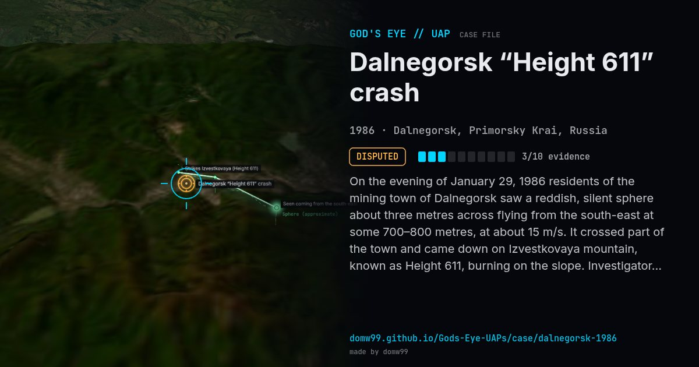

Dalnegorsk “Height 611” crash

On the evening of January 29, 1986 residents of the mining town of Dalnegorsk saw a reddish, silent sphere about three metres across flying from the south-east at some 700–800 metres, at about 15 m/s. It crossed part of the town and came down on Izvestkovaya mountain, known as Height 611, burning on the slope. Investigators reported tiny metallic droplets 2–5 mm across, and fibres in a tangle of metal, quartz and gold-coloured threads. In Russia it is often called the best-documented UFO crash, although the technical findings come mainly from the group that investigated it.
Explanation
Ball lightning and other plasma phenomena have been proposed. The reports of unusual metal fragments come mostly from the investigating group and have not been independently confirmed.
What was seen
Shape: Reddish sphere about 3 m across
Witnesses: Residents of Dalnegorsk
Duration: A few minutes